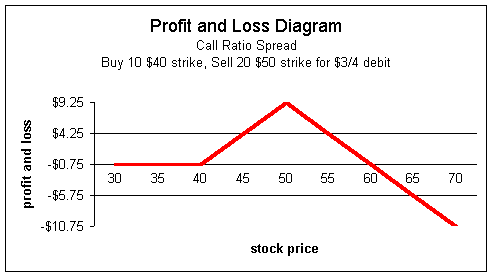
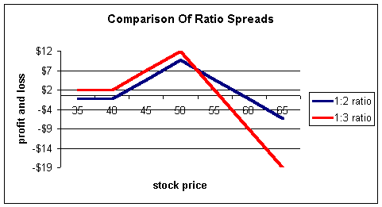
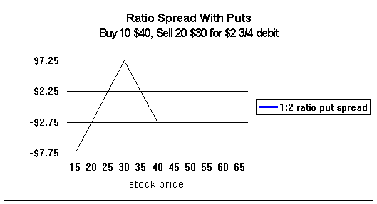

Ratio spreads are a very powerful strategy and can be done with calls or puts. In theory, they are probably the perfect trade as they provide for buying the valuable options and selling off higher amounts of the "worthless" options to finance the long position. But they do come with great risks to the tune of unlimited losses at an accelerated rate if the stock moves above the strike of the short position.
The mirror image of the ratio spread is the backspread. If you place a ratio spread, the trader on the other side has a backspread.
A call ratio spread consists of buying a lower strike call and then selling a higher number of contracts of a higher strike price.
A trader is bullish on MRVC currently trading $37-3/4. The trader thinks the stock will go above $40 by December but not above $50. A ratio spread, under these circumstances, may be a perfect strategy:
Buy 10 Dec $40 calls = $5 1/4
Sell 20 Dec $50 calls = $2 1/4
Net debit $3/4
We have arbitrarily chosen the ratio of 10 and 20 (buying 10 and selling 20). The trader could have bought 10 and sold 11, or bought 50 and sold 150, or any other ratio among the infinite combinations. We will see shortly why a trader will choose one ratio over another.
First, we need to understand how we arrived at a net debit of $3/4 in the above trade.
There are two fairly easy ways to figure this out, and whichever one works for you is fine. The first and probably best way to understand the ratio spread is to break the trade up into the smallest component parts. To do this, we need to find the highest number that is common to the 10 calls we're buying and the 20 we're selling (in math terms, the greatest common factor).
The highest number, in this case, is 10; there is no number higher than 10 that can go into both 10 and 20 evenly. If we divide the buy 10 and sell 20 calls by our greatest common factor, we arrive with buy 1 call and sell 2, a basic unit. The trader in the above example is just executing this basic spread 10 times.
In other words, he could call his broker and say, "Buy 1 and sell 2, Buy 1 and sell 2, Buy 1 and sell 2..." The trader could repeat this order 10 times and, in the end, would have purchased 10 and sold 20.
In trader's jargon, this person executed 10 1 by 2 spreads which is usually written as 10 (1 x -2) spreads.
| Examples: If a trader: |
Now that we know the basic unit is 1 by 2, let's look at the above trade again. Effectively the trader has done this:
Buy 1 Dec $40 calls = $5 1/4
Sell 2 Dec $50 calls = $2 1/4
The trader purchases 1 for $5-1/4 and sells 2 for a total of 2 * $2 1/4 = $4-1/2. They paid $5-1/4 and received $4-1/2 for a net debit of $3/4.
The second method may be a little easier:
Buy 10 $40 calls for $5 1/4 = -$5,250
Sell 20 $50 calls for $2 1/4 = +$4,500
Net debit $750
The trader buys 10 calls for a total of $5,250 and sells 20 for a total of $4,500. The net difference is $750. Because he is trading 10 spreads (yes, you still have to be able to break it down into component parts!), we need to divide $750 by 1,000 (because 10 contracts represent 1,000 shares) for a net debit of $3/4 per spread.
| Important note: It is very important to understand how to calculate these figures if you are executing a ratio spread, because it is a complex strategy and will require level 3 option approval. If your broker calculates this incorrectly, they may hold you either partially or fully liable for the trade. Why? Because on the options application you will have to check the box designating "excellent" knowledge to get level 3, and they may hold you to this. |
Now we know the trader is trying to execute 10 (1 x -2) spreads for a net debit of $3/4. The total debit from his account will be 1,000 * $3/4 = $750.
Yes, but not just arbitrarily. Because the minimum spread, in this example, is 1 by 2, the floor trader could give your broker a confirmation of buy 1 sell 2, buy 2 sell 4, buy 3 sell 6, and so on up to the total of buy 10 and sell 20. They could not, for example, return a confirm of buy 2 sell 20. It will always have to be a multiple of the basic unit, which is 1 by 2 for this trade.
An "all-or-none" restriction will prevent partial fills but are generally inadvisable, as option quotes are good for a minimum of 20 contracts. If you put an "all-or-none" restriction on the order, it is possible to get no execution, and you cannot hold the floor to time and sales. So use "all-or-none" orders sparingly and it's probably best to never use all-or-none's for orders of 20 contracts or less.
Let's assume our trader gets filled on all 10 (1 x -2) spreads and spends $750 to do so. What does the position look like from a profit and loss standpoint? (If you are unsure how to read these charts, please see our section under "Profit and Loss Diagrams.")
We see that the trader will lose the entire $3/4 per spread, or $750, if the stock is below $40 at expiration. The trader will maximize profits at $50, the strike price of the short position. What will be the max profit? The maximum this spread can be worth is $10, the difference in strikes; however, the trader paid $3/4, so the max profit will be $10 - $3/4 = $9 1/4.
It is easy to see where the danger is with the ratio spread; there is unlimited upside risk. The trader will start to lose profit with the stock above $50 at expiration, and will break-even at $40-3/4 and $59-1/4. The downside break-even is simple to figure; the trader paid $3/4 for the position, so he must make this up. If the stock is at $40-3/4 at expiration, the long call position will be worth $3/4 and the short position will expire worthless, so the trader will break even.
It can be a little tough to figure the break-even on the upside, so we'll spend some time here. For all the math people, one easy way to figure it is to understand that the slope will be negative one due to the 1:2 ratio of the spread. With a slope of negative one, the stock must move 9-1/4 points (the max profit) to the right of $50 (the stock price at max profit), which puts you at a stock price of $59-1/4. This method does require a solid understanding of graphs and slopes so do not use it if this does not make sense to you. I only mention for those who do understand mathematical slopes, as it is easy to calculate in your head if you do. As an example, if the trader entered a $40/$50 1 by 3 ratio spread for a net debit of $3/4, the break-even point to the upside would occur at twice the rate; a slope of negative 2. Now, instead of moving 9-1/4 points to the right, the stock will only have to move half this distance or $4-5/8 for a break-even price of $54-5/8.
To be on the safe side, especially if you are new to ratio spreads, the following method will be the best, but does require basic skills in algebra. Start by understanding that the definition of break-even is where revenues equal expenses, so:
If we let S represent the stock price at expiration,
Our profits will be (S - $40), because we will have intrinsic value of this amount on the long position. Our expenses will be 2* (S - $50) - $3/4. This is because we sold two contracts for every one purchased and they will have S - $50 for value which is a liability to us. In addition, we spent $3/4 for the trade, which is also an expense. Now put the two equations equal to each other and solve:
S - $40 = 2 * (S - $50) - $3/4
S - $40 = 2S - $100 - $3/4
After collecting all like terms to one side, we see S = $59-1/4.
If you understand nothing about the break-even point to the upside, at least understand this: there is unlimited risk to the upside in a call ratio spread! The larger the ratio, the more accelerated the losses become.
This is a popular tool among floor traders and there are good reasons it is well liked. The basic reason is this: it allows the trader to buy the "good" option cheaply by financing it with the "junk" option -- the one he feels will never have intrinsic value. By doing so, the return on investment is radically magnified.
Assume our trader above was bullish and just bought 10 calls of the $40 strike with two months to expiration. He would have paid $5-1/4 per contract or $5,250. Let's also assume the stock closes at $50 -- our trader's expectation -- at expiration. This position would be worth 10 points on 10 contracts for a total of $10,000; however, the trader will net $4,750 after costs. The return on investment is roughly 90-1/2% or 4,675% annualized!
Now let's look at our trader who entered the ratio spread. Effectively, he is buying the 10 $40 strike contracts for only $3/4 of a point instead of the $5-1/4 of the long call trader. Of course, this does not come for free, as the ratio trader is faced with unlimited risks to the upside; the long trader would simply make more money as the stock moves higher. Assuming the trader's assumption that the stock will not rise (or at least significantly) above $50, let's see how the ratio spread fares:
Buy 10 Dec $40 calls = $5 1/4
Sell 20 Dec $50 calls = $2 1/4
Net debit $3/4
Again, assuming the stock closes at $50, this trader will also make $10 points on the spread, as the short $50 calls will expire worthless. The return on investment here is 1,233% or 561,865,400%
You can certainly see where the incentive is to trade ratios! Be careful, the market does not allow for these returns for nothing. The ratio spreader took a proportionately higher risk to capture that kind of profit.
We have demonstrated the advantage of the ratio spread,which is magnified gains if you are correct in your assumptions. If the trader feels really sure about his assumptions and is willing to take the risk, he may decide to enter into a larger ratio. Let's run through the above example again, but this time, assume the trader enters a 1:3 ratio spread.
Buy 10 Dec $40 calls = $5 1/4
Sell 30 Dec $50 calls = $2 1/4
Net Credit $1 1/2
This trader actually gets a credit from the net transactions, effectively getting paid to take the 10 long $40 strike calls. Again, do not be fooled into thinking it comes for free!
How did we figure the credit? The trader bought 1 for - $5-1/4 and sold 3 for a total of + $6- 3/4 for a net of $1-1/2 credit per spread.
We know he bought 10 (1 x -3) spreads for a total credit of $1,500. By the way, this is still considered a buy even though a credit is received. This is because the trader wants the spread to widen.
The profit and loss diagram looks like this:
It is now easy to see the differences. As the number of sells increases relative to the buys, the profit and loss diagram will shift upward as in the 1:3 ratio (red) compared to the 1:2 (blue). That's the good part; the long position gradually becomes cheaper to own, and the trader will receive a credit if enough of the short calls are sold. Now for the downside, as more are sold, the downside break-even point approaches much more rapidly, which means you head into losses at a faster rate.
For the 1:3 spread, the trader received a credit of $1-1/2 so there is no downside breakeven. The trader will have a $1-1/2 profit even if the stock collapses. The maximum gain is the 10 points on the spread plus the $1-1/2 received, for a total of $11-1/2.
As for the upside break-even point, (for the math people again) we know the slope is negative 2, so the $11-1/2 maximum gain will fall at twice the rate or $5-3/4. So if the stock price is $55 3/4 at expiration, this trader will be at break even.
Algebraically, our revenues at expiration are:
S-$40 + $1-1/2
And the expenses are:
3 * (S-$50)
Putting these two equal to each other:
S - $40 + $1-1/2 = 3 * (S-$50)
S - $40 + $1-1/2 = 3S - $150
2S = $111.50
S = $55-3/4
If you want to check it, assume the stock is at $55 3/4 at expiration. The long calls will be worth +$15 3/4 (intrinsic value) and the short calls with be worth 3 * $5-3/4 = $17-1/4 which is a liability because it is a short position. So, the trader has +$15- 3/4 and - $17-1/4 for a net loss of $1-1/2 which exactly offsets the $1-1/2 credit received at the onset of the position.
The real risk to the trader is if the call ratio trader is if the stock makes a large move to the upside, especially between trading sessions. For example, the trader in the above trade could be holding the position with the stock now at $48. The next trading day, the stock opens at $60 and continues trading higher. In this instance, the trader never has a chance to get out of the position until large losses have occurred. Floor traders will generally close them out long before the risk gets too great, and if the stock collapses, often end up with a credit from the trade.
Ratio spreads can be established with puts as well. A put ratio spread allows the investor to play the downside for much less money then either a long position or regular spread position.
To establish a ratio spread with puts, the trader will buy one strike price and sell a higher number of contracts of a lower strike price.
Assume a trader is bearish and we have the following quotes on MRVC:
Buy 10 Dec $40 puts = $7 1/2
Sell 20 Dec $30 puts = $2 3/8
Net debit $2 3/4
The trader effectively buys 10 $40 strike puts for $2-3/4 instead of $7-1/2.
The profit and loss diagram looks like this:
We see, as expected, that the put ratio spread is exactly opposite the of the call ratio spread. Here, that maximum gain is at the strike price of the short $30 put. At this point, the spread will be worth $10 to the trader for a net of $7-1/4 after the $2-3/4 cost is subtracted. Below $30, the trader starts to lose profits and hits break-even at $22-3/4. If the stock should fly to the upside, the maximum the trader can lose is the original $2-3/4.
Ratio spreads are a wonderful tool for trading. The spreads can all be custom-tailored to suit your specific needs and sentiment of the underlying stock. They can, depending on how they're used, have substantial risks and will require the use of naked options approval (usually level 3 for most firms) from your broker.
Practice doing "paper trades" if you're new to ratio spreads, as they will greatly improve your understanding of options, strategies, and position management techniques.